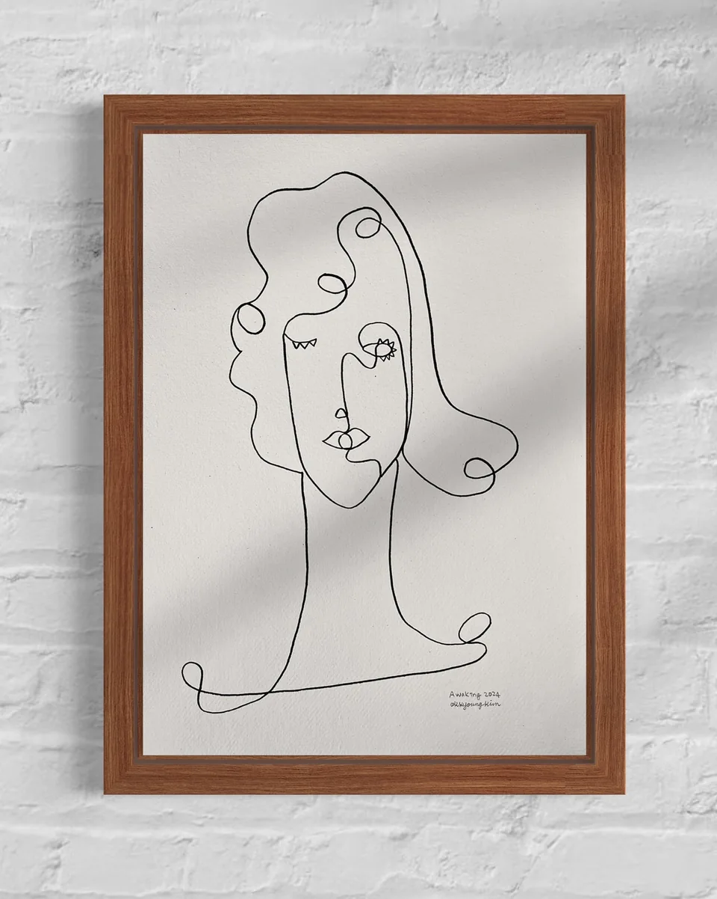

Series / 01—06
작업의 기록
드로잉 · 디지털 작업 · 회화
About the artist
작가소개
“다양한 표현을 통해서
철학하는 예술을 하고 싶어.”
김옥경 · 한줄드로잉.
그림에 한정하지 않는 예술의 방향을 묻고 있습니다.
Human beings are beautiful because we feel sorrow. A life unfolds in one unbroken line, each moment endured becoming part of its path. And in its colors, the feelings time has left behind.
작가의 기록 읽기Studio notes
작업노트
작업에서 출발한 생각을 글로 남깁니다.
Contact
작업에 관한 대화
Instagram · Threads · YouTube · TikTok